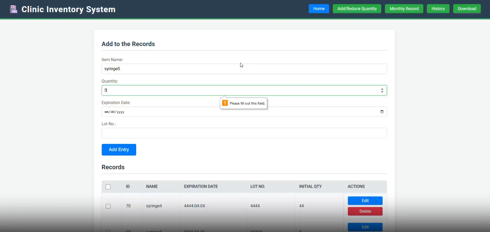
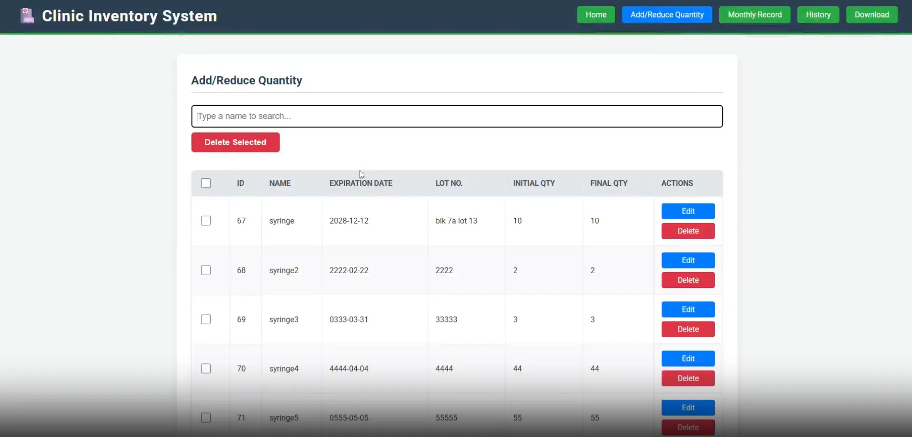
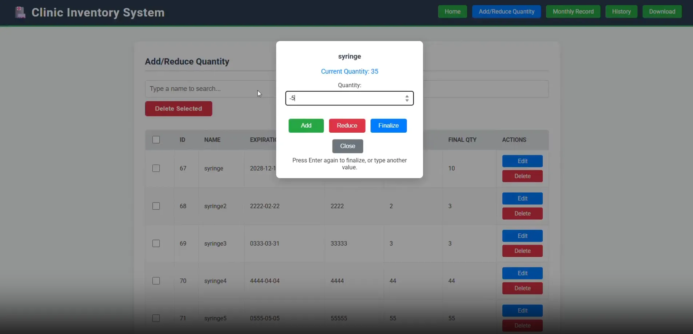
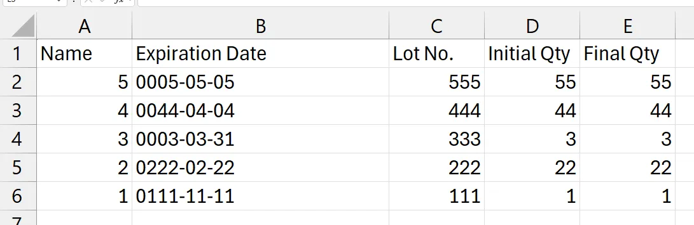

Manage medicines, equipment, and stock levels with a simple and intuitive interface.
Walkthrough Jump to a feature in the demo




Developed a web-based inventory management platform for healthcare providers to track medical supplies, monitor expiration dates, and automate restocking processes. This system aims to reduce waste and ensure that essential medications and equipment are always available for patient care. Additionally, this would also help keep track of what to submit to the DOI if that clinic needs to send a report regarding the items.